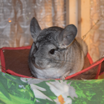
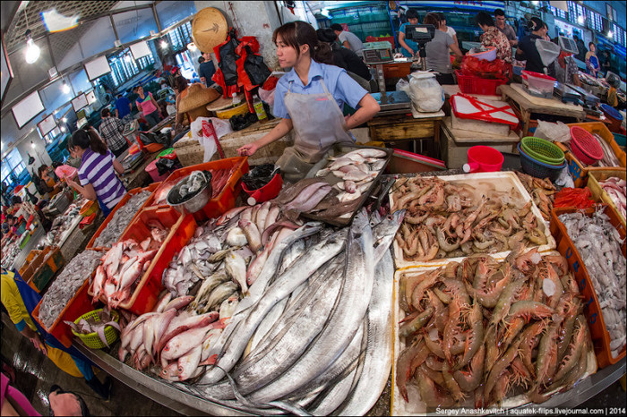

Белое золото
В Китае продолжают высказывать предположения о том, кто стал «нулевым пациентом» с коронавирусом.По версии газеты «Пэнпай», первой заболевшей стала продавщица креветок на рынке морепродуктов в Ухане.
По данным газеты, женщина по фамилии Вэй, которая занималась торговлей живыми креветками на рынке «Хуанань», заболела 11 декабря.У нее поднялась температура, но бизнесвумен решила не отлеживаться дома, а сделать себе укол и пойти на работу.Для этого она обратилась в небольшую клинику, которая находилась на первом этаже ее дома, написало РИА «Новости» со ссылкой на издание.Однако самочувствие Вэй не улучшилось и после второго укола.В другой больнице ей тоже не смогли помочь, тогда она решила отлежаться дома, а 16 декабря обратилась в больницу «Сехэ» при Хуачжунском университете науки и технологии.Непонятно, как Вэй подхватила коронавирус, но ее называют первым подтвержденным случаем заболевания COVID-19 на рынке «Хуанань».
Интересно, тот самый, первый китаец, которого выбрал вирус, и который съел экзотику, при условии что он выжил, думает сейчас о том, что поставил на уши миллиарды людей?Это к слову о цепочке событий - бабочка крыльями порхнула, а на другом конце планеты ураган
Ребят, зачем люди покупают туалетную бумагу?Как правило ванна находится рядом с туалетом, и проще помыть попу, чем растирать нугу между булок.Разве нет?Удобрил Землю и помылся сразу.
Знакомый подарил жене набор: колье и сережки из белого золота.На первом же корпоративе сотрудница подходит к ней:
- Красивый набор!Это серебро?
- Говори всем, что серебро, очень похоже.
Posted On: 2020-03-25T21:00:00


Content Date: 2020-03-25
Download Date: 2021-05-13
Document ID: L0C04C238